44.08%
Average SR gain
Improvement over the reported SOTA baseline.
ECCV 2026 Project Page
A Unified Framework for Learning Robotic Manipulation Across Embodiments Beyond Imitation of Human Demonstrations
Learning morphology-aligned robotic manipulation policies from human demonstrations across 2-finger, 3-finger, and 5-finger embodiments.
* Corresponding authors
UniBYD moves beyond direct imitation of human hand motion by using dynamic reinforcement learning, unified morphology modeling, and early-stage shadow guidance to discover policies aligned with each robot hand's physical structure.
Paper Summary
Overview
UniBYD leverages human demonstrations while allowing robots with different morphologies to discover strategies suited to their own embodiments.
Leveraging human demonstrations, UniBYD learns manipulation strategies that transcend mere imitation and are tailored to a broad spectrum of robotic hand morphologies.
Method
UniBYD combines morphology-aware representation, reward annealing, and a shadow engine to shift training from demonstration-guided imitation toward autonomous policy discovery.
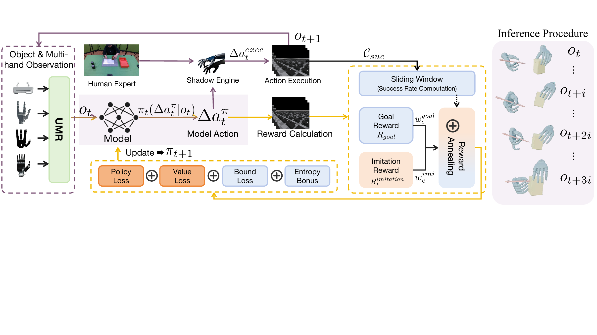
The framework of UniBYD. UniBYD first encodes diverse hands via UMR, then uses dynamic PPO with annealed rewards and shadow-engine guidance before transitioning to autonomous exploration.
UMR standardizes observation and action spaces across hands with different degrees of freedom, using fixed wrist states, padded joint states, trigonometric joint encodings, and morphology descriptors.
The policy begins with offline-informed imitation and gradually shifts toward online goal-driven exploration through annealed imitation and goal rewards.
A hybrid Markov-based mechanism blends policy actions with expert-guided actions and object control to reduce early state drift and preserve useful learning signal.
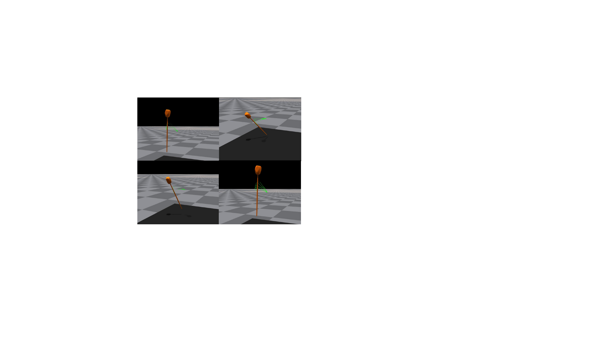
The shadow engine blends model-predicted and expert-guided actions, while a PD controller applies expert object force to guide the object during early training.
Experiments
Experiments cover simulated cross-morphology manipulation, ablations, robustness analysis, and real-world transfer.
UniManip is built upon OakInk-V2 and evaluates 2-finger, 3-finger, 5-finger unimanual, and 5-finger bimanual manipulation. Simulations use Isaac Gym with 4,096 parallel environments and 1,000 trials per task.
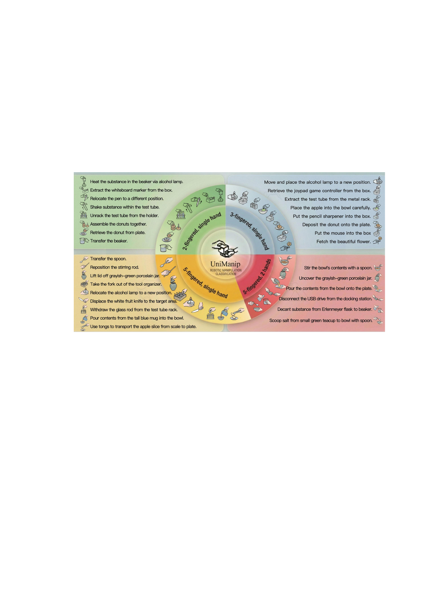
Distribution of UniManip tasks and hand configurations.
UniBYD is compared with retargeting, ManipTrans, and a reproduced DexMachina variant. A dash indicates that the method does not support the corresponding hand type.
| Hand Type | Metric | Retarget | ManipTrans | DexMachina* | UniBYD |
|---|---|---|---|---|---|
| 2 fingers, 1 hand | SR ↑ (%) | 12.27 | - | - | 78.13 |
| PE ↓ (cm) | 2.81 | - | - | 0.53 | |
| OE ↓ (°) | 28.77 | - | - | 18.74 | |
| AS ↑ | 4.24 | - | - | 8.93 | |
| 3 fingers, 1 hand | SR ↑ (%) | 4.36 | - | - | 71.81 |
| PE ↓ (cm) | 2.65 | - | - | 0.89 | |
| OE ↓ (°) | 29.19 | - | - | 12.95 | |
| AS ↑ | 2.48 | - | - | 9.13 | |
| 5 fingers, 1 hand | SR ↑ (%) | 5.68 | 26.44 | - | 85.67 |
| PE ↓ (cm) | 2.89 | 1.93 | - | 0.77 | |
| OE ↓ (°) | 29.13 | 22.28 | - | 10.90 | |
| AS ↑ | 3.07 | 5.88 | - | 9.29 | |
| 5 fingers, 2 hands | SR ↑ (%) | 2.10 | 28.75 | 25.33 | 57.67 |
| PE ↓ (cm) | 2.96 | 1.44 | 1.66 | 0.72 | |
| OE ↓ (°) | 29.56 | 16.84 | 14.13 | 13.44 | |
| AS ↑ | 2.58 | 4.34 | 4.81 | 8.16 |
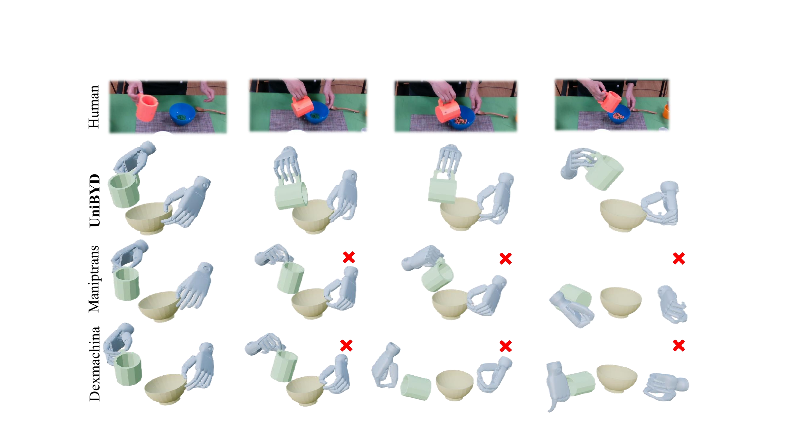
UniBYD learns manipulation strategies aligned with robot embodiment, whereas ManipTrans and DexMachina* fail in the illustrated case.
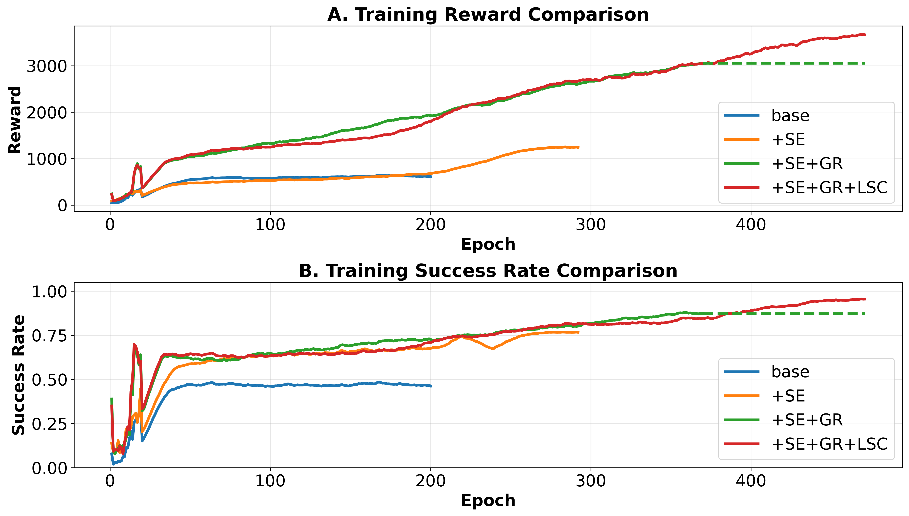
Training procedure of a representative task.
The supplementary results visualize performance across simulated and real robotic morphologies, including 2-fingered, 3-fingered, single 5-fingered, and dual 5-fingered settings.
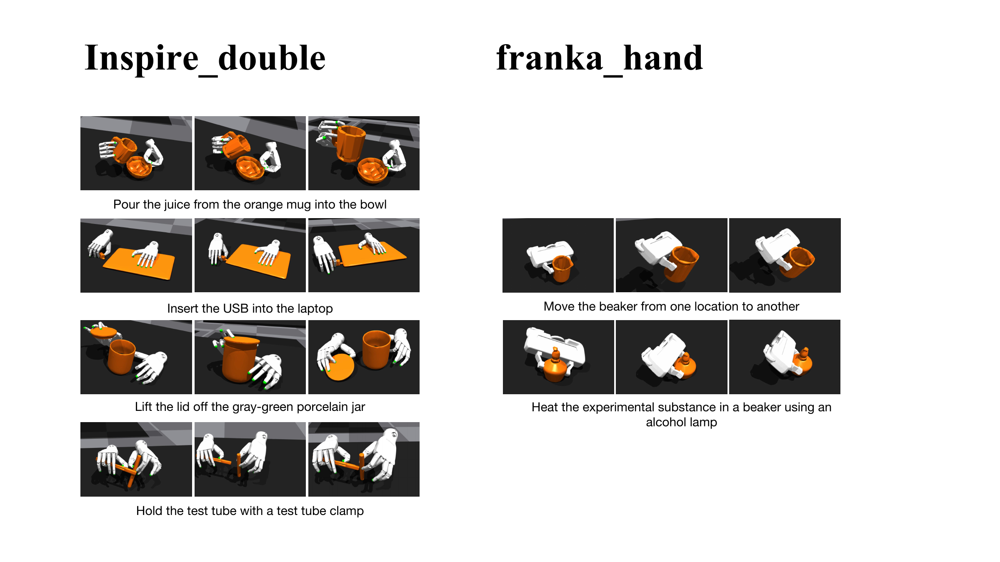
Experimental results of the 2-fingered robotic hand in simulation.
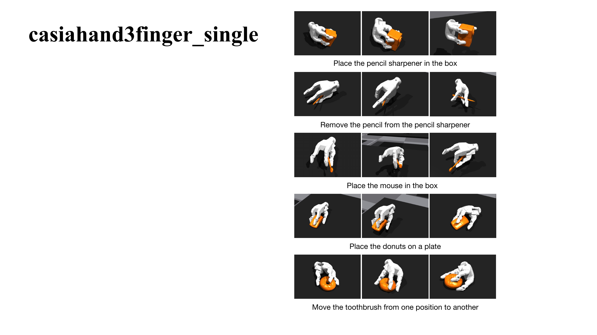
Experimental results of the 3-fingered robotic hand in simulation.
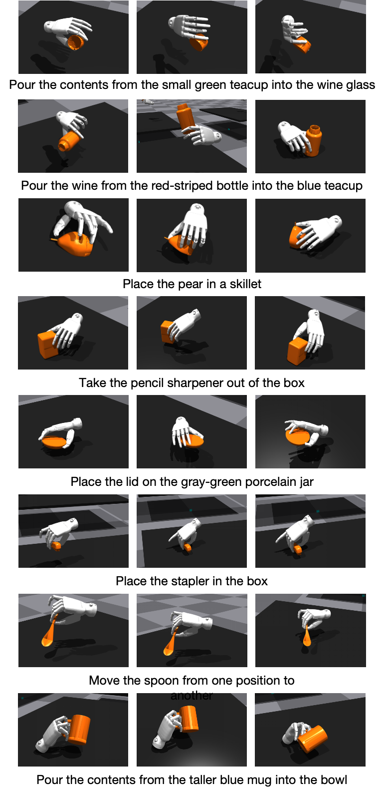
Experimental results of the single 5-fingered robotic hand in simulation.
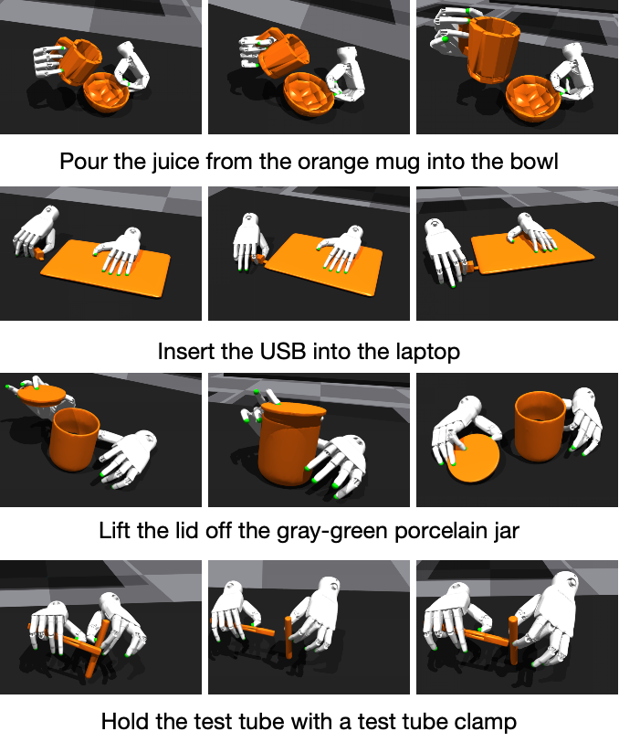
Experimental results of the dual 5-fingered robotic hand in simulation.
Analysis
The analysis examines the role of the shadow engine, goal rewards, loss synergy, morphology descriptors, and reward annealing.
The main ablation validates the individual contributions of the shadow engine (SE), goal reward (GR), and loss synergy with counterbalancing (LSC).
| Hand Type | Metric | Base | +SE | +GR | +GR+LSC | UniBYD |
|---|---|---|---|---|---|---|
| 2 fingers, 1 hand | SR ↑ (%) | 24.94 | 67.06 | 56.19 | 61.50 | 78.13 |
| PE ↓ (cm) | 2.66 | 0.54 | 1.28 | 1.32 | 0.53 | |
| OE ↓ (°) | 27.51 | 19.89 | 21.31 | 21.58 | 18.74 | |
| AS ↑ | 5.63 | 7.56 | 7.99 | 8.36 | 8.93 | |
| 3 fingers, 1 hand | SR ↑ (%) | 19.56 | 51.06 | 65.13 | 67.63 | 71.81 |
| PE ↓ (cm) | 2.45 | 0.95 | 0.93 | 0.87 | 0.89 | |
| OE ↓ (°) | 26.09 | 14.67 | 14.06 | 12.85 | 12.95 | |
| AS ↑ | 5.42 | 6.87 | 8.52 | 8.78 | 9.13 | |
| 5 fingers, 1 hand | SR ↑ (%) | 13.56 | 55.11 | 63.17 | 65.39 | 85.67 |
| PE ↓ (cm) | 2.46 | 1.24 | 0.87 | 0.79 | 0.77 | |
| OE ↓ (°) | 27.12 | 17.29 | 13.22 | 13.23 | 10.90 | |
| AS ↑ | 4.87 | 6.33 | 8.29 | 8.64 | 9.29 | |
| 5 fingers, 2 hands | SR ↑ (%) | 33.46 | 43.33 | 47.01 | 54.17 | 57.67 |
| PE ↓ (cm) | 1.46 | 1.43 | 1.48 | 1.36 | 0.72 | |
| OE ↓ (°) | 15.35 | 17.64 | 17.17 | 14.17 | 13.44 | |
| AS ↑ | 3.20 | 3.55 | 6.27 | 6.73 | 8.16 |
Removing the static morphology descriptor drops SR from 93.00% to 72.00%, increases OE and PE, and requires about 97.9M steps to reach 80% SR instead of 80.7M steps.
On X-Arm 2-fingered, Casia Hand-G 3-fingered, and OHand 5-fingered platforms, UniBYD achieves 26/50, 32/50, and 35/50 successful trials, respectively.
| Method | SR ↑ (%) | OE ↓ (°) | PE ↓ (m) | AS |
|---|---|---|---|---|
| w/o Boundary Loss | 81.57 | 7.50 | 0.17 | 8.97 |
| w/o Entropy Loss | 84.68 | 5.67 | 0.18 | 8.34 |
| w/o Reward Annealing | 75.44 | 5.80 | 0.20 | 7.65 |
| UniBYD | 93.00 | 2.92 | 0.10 | 9.12 |
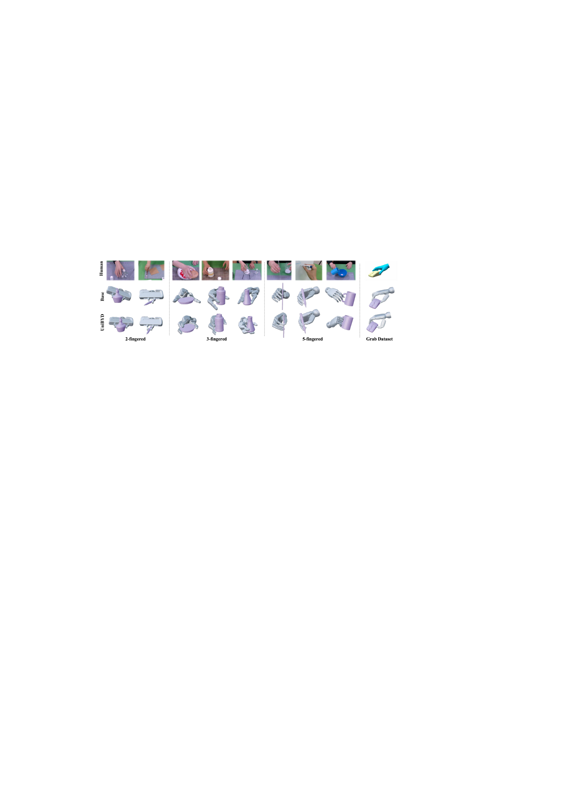
Comparative experimental results for base and UniBYD.
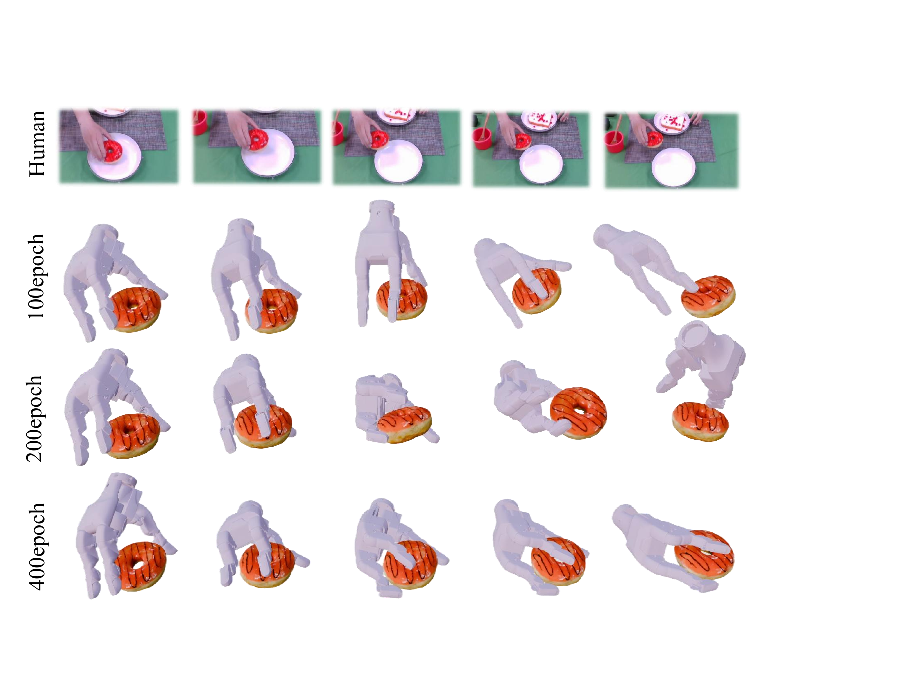
Results illustrating the progressive evolution of manipulation strategies over the course of training.
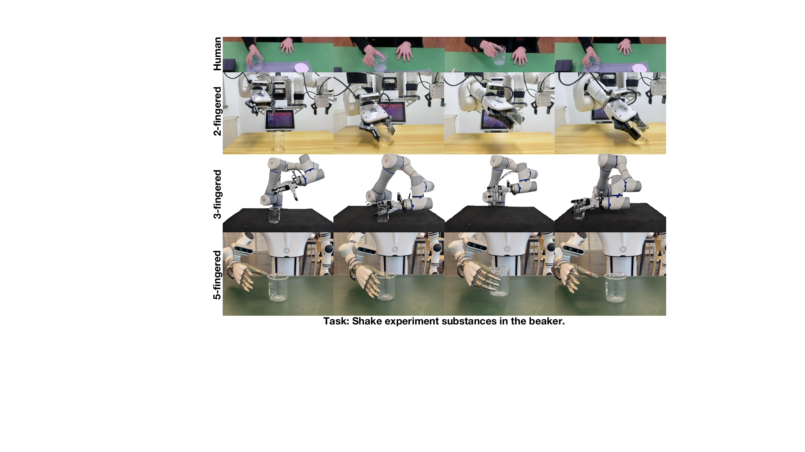
Experimental results on real-world robotic platforms.
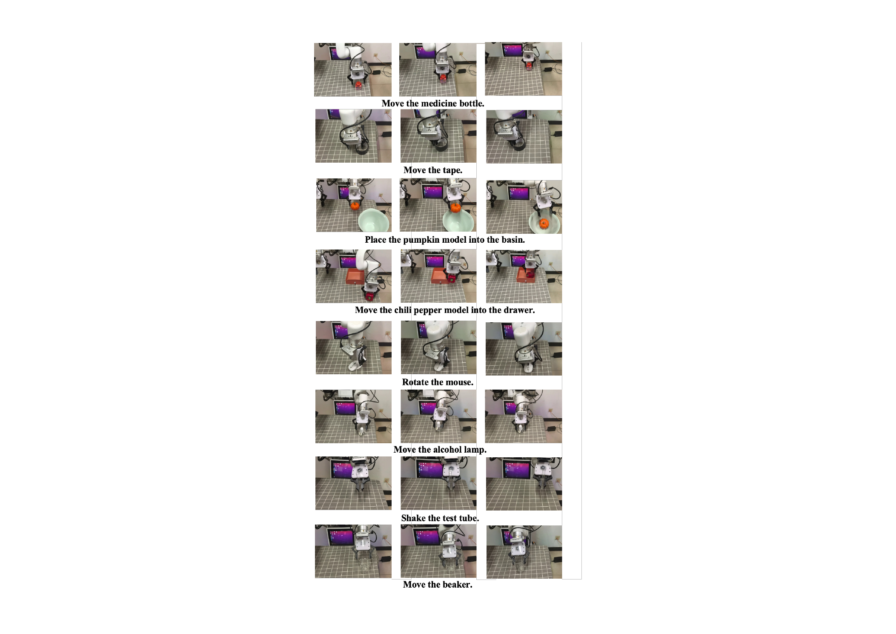
Experimental results of the 2-fingered robotic hand in the real world.
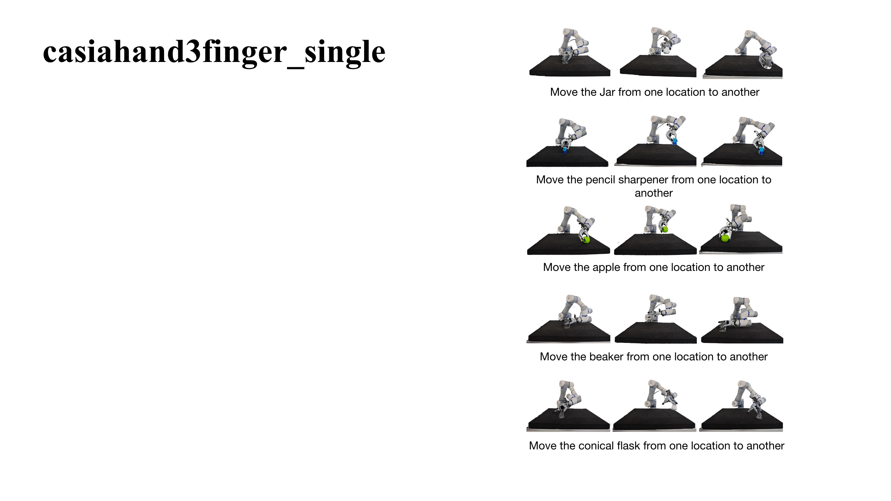
Experimental results of the 3-fingered robotic hand in the real world.
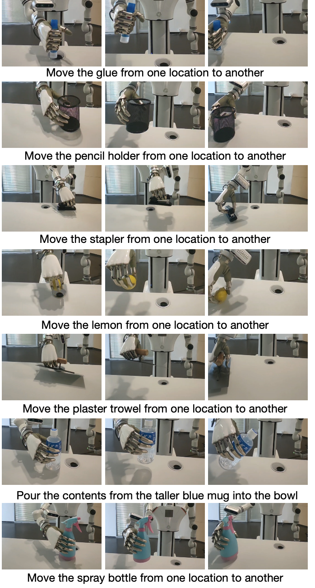
Experimental results of the 5-fingered robotic hand in the real world.
Videos
Responsive video cards are grouped by embodiment. Use the filters to focus on 2-finger, 3-finger, or 5-finger demonstrations.
Franka gripper simulation.
Franka gripper simulation.
Franka gripper simulation.
Three-finger hand simulation.
Three-finger hand simulation.
Three-finger hand simulation.
Three-finger hand simulation.
Inspire dexterous hand simulation.
Inspire dexterous hand simulation.
Inspire dexterous hand simulation.
Inspire dexterous hand simulation.
Citation
@article{yuan2025unibyd,
title={UniBYD: A Unified Framework for Learning Robotic Manipulation Across Embodiments Beyond Imitation of Human Demonstrations},
author={Yuan, Tingyu and Guan, Biaoliang and Ye, Wen and Tian, Ziyan and Yang, Yi and Zhou, Weijie and Li, Zhaowen and Huang, Yan and Wang, Peng and Zhao, Chaoyang and others},
journal={arXiv preprint arXiv:2512.11609},
year={2025}
}